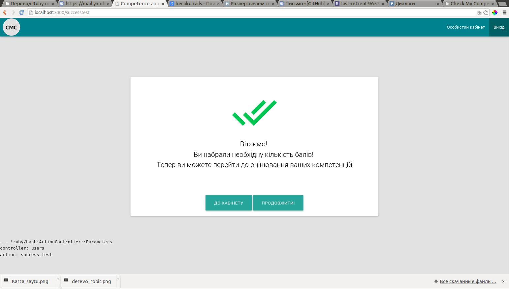
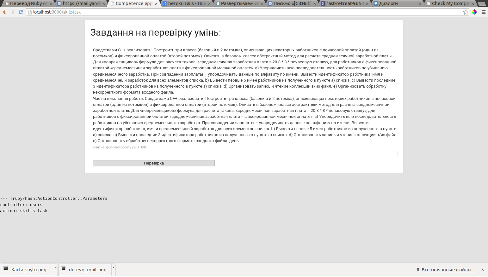

Завдання на перевірку навичок
Зробити завдання на перевірку навичок у системі для проходження юзером.
Опис будови модулю «Завдання на перевірку навичок»:

Після того як користувач пройде перші 2 тести які є відбірковими (якщо користувач відповість правильно хочаб на половину з питань то він зможе пройти далі )
Йому буде надана можливість пройти завдання на оцінку його навичок(наприклад розробка засобами ООП кавоварки(імітування)
Приклад можна побачити на скріні

-
Подальший розвиток нашої системи передбачає додавання більшої кількості завдань та глибоку оцінку навичок та вмінь людини